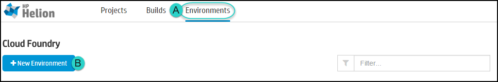
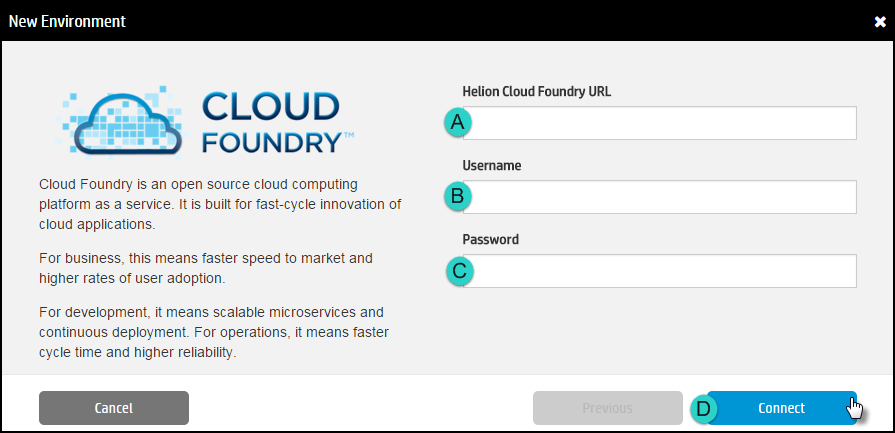

The Environment is a target where the application is deployed.
Note: Currently, only Helion Cloud Foundry environments are supported.
- Click the Environments tab and then click New Environment.

- Provide a descriptive Name for this environment.
- Click the Type of environment to create.
- CloudFoundry: Deploys the application to a Cloud Foundry endpoint. At this time, only Helion Cloud Foundry environments are supported.
- Docker: Builds the application and pushes the image to a public or private DockerHub repository.
- Lattice: Deploys the application to a simplified container cluster.
- Click Next.
- Provide the required credentials and then click Connect.